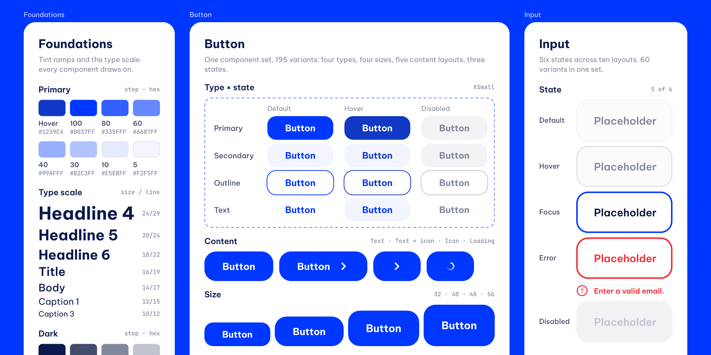
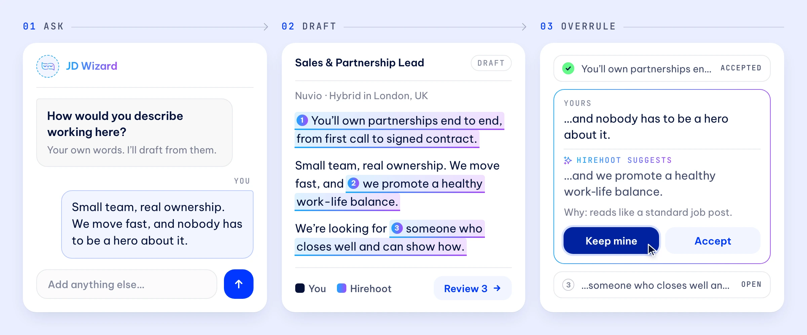
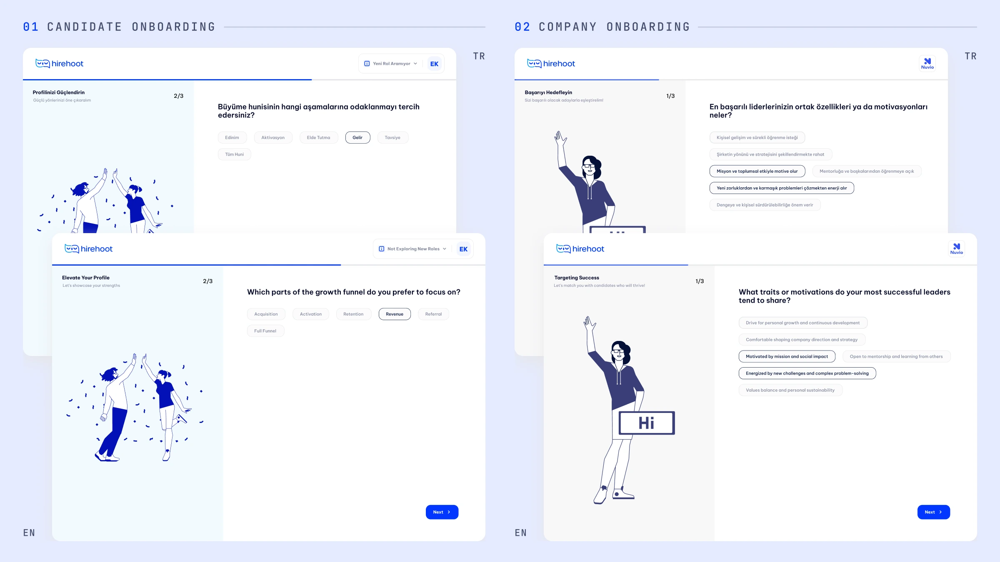
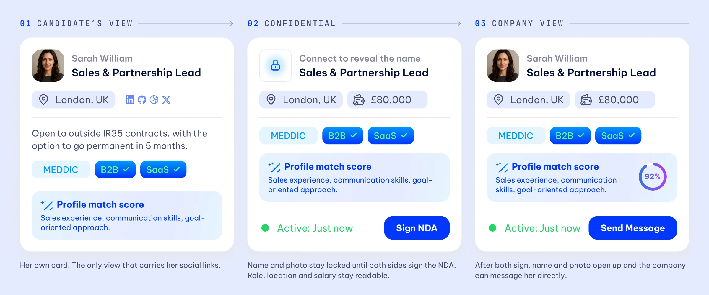

The file the next designer inherits.
Hirehoot were about to hire their first designer — a junior — and knew that person would arrive to an empty file and a product with no visual logic. My job was to be there first: build the system, decide how the brand behaves inside the product, and draw the hard flows as real screens, so the person who came next had somewhere to start from rather than a blank canvas and a backlog.
Role
Foundation designer — design system, brand in product, core flows
Timeline
2 months, brief to handover
Built for
An incoming junior designer and the engineering team
Focus
Design systems · AI interaction design · Brand application · Onboarding
Tools
Figma · Prototyping
Designing for the designer who isn't hired yet
Most handover work is written for engineers. This one had a second audience: someone junior, arriving in a few months, who would own the product and would not have anyone senior to ask. That changes what a good file looks like. It has to be obvious rather than clever, it has to answer questions before they are asked, and every pattern in it has to be followable without me in the room.
So the deliverable wasn't a set of screens. It was a baseline: the system underneath, a demonstration of how the brand behaves once it is inside an interface, and the flows that were genuinely hard to get right — the AI ones — drawn out fully so nobody had to invent them under deadline.

The system first, so the screens become assembly
The fork: draw the screens they needed now and extract a system afterwards, or spend the first weeks on a system and have nothing to show for a while.
What I chose: the system. Colour is a token ramp with named steps, opacities and gradients rather than a swatch grid. Buttons are matrixed across four types, four sizes, five content types and their states, including loading and disabled. Inputs carry focus, filled, error and disabled in the file, so nobody has to guess what a validation message looks like. Type runs from display to caption across seven weights, and the icon library was complete before it was needed — the only way it stays consistent once someone else is adding screens.
What it cost: the first three screens took far longer than they would have otherwise, which is uncomfortable in week two of a two-month engagement. It pays back the moment a second person touches the file.

The wizard, not the button
The fork: generate the whole job description in one pass, which is what every competitor does, or make the manager work for it.
What I chose: passes. A one-shot generator produces text nobody owns — the manager can't defend it in a hiring meeting and candidates can smell it. So the wizard asks, drafts, and shows its suggestions where they can be accepted or overruled one at a time. The interface's real job is making the seam between human and model visible: you should always be able to see which sentence came from where, and change it.
This is the part of the file that had to be drawn rather than described. An AI feature is an interaction, not a screen, and a team without a designer will default to a text box and a button. Showing the behaviour — including what the undo looks like — was the only way to make the harder answer survive my leaving.
What it cost: the wizard is slower than a button, and slower is a real price in a product people open when they are already behind.

Where the brand actually lives
The fork: hand over a brand sheet and let the next person work out how it applies, or decide it inside the product and show the result.
What I chose: inside. Candidates and companies enter through separate onboarding flows that share one shell: one question per screen, a custom spot illustration on each, a visible progress state, the same footer and the same selection language. The illustration isn't decoration — it's the only warmth in a form, and forms are where people quit. Getting that to feel like Hirehoot rather than like a template is the brand decision, and it had to be demonstrated rather than specified.
The flows were laid out to hold at Turkish string lengths as well as English, so localisation wouldn't be the thing that broke the layout later.
What it cost: two parallel flows is more file to maintain than one with branches, and the person inheriting it has to keep them in step.

Three permission states in one component, not three screens
The fork: build a separate screen per audience, or make one component that knows who is looking at it.
What I chose: one component. The candidate card had to work in three contexts at once — the candidate's own view, the confidential view where the name and photo stay locked until both sides sign an NDA, and the company view afterwards. Role, location and salary stay readable throughout, because the point of the confidential state is to let both sides decide, not to hide the job.
Solving that in the system was cheaper than building three screens, and it means the fourth context — whenever it arrives — is a variant rather than a project. For a team about to be run by one junior designer, that difference is the whole argument.
A file somebody else can keep building in.
Two months from brief to handover: a design system specified across its states, the brand resolved inside the interface rather than on a slide, the AI interaction drawn out so its logic survives without me, and the core flows of both sides of the marketplace as real screens.
The measure of this project isn't adoption or a conversion number — it's whether the next designer could pick it up. That is what it was built for, and it is why the system got the first three weeks rather than the screens.